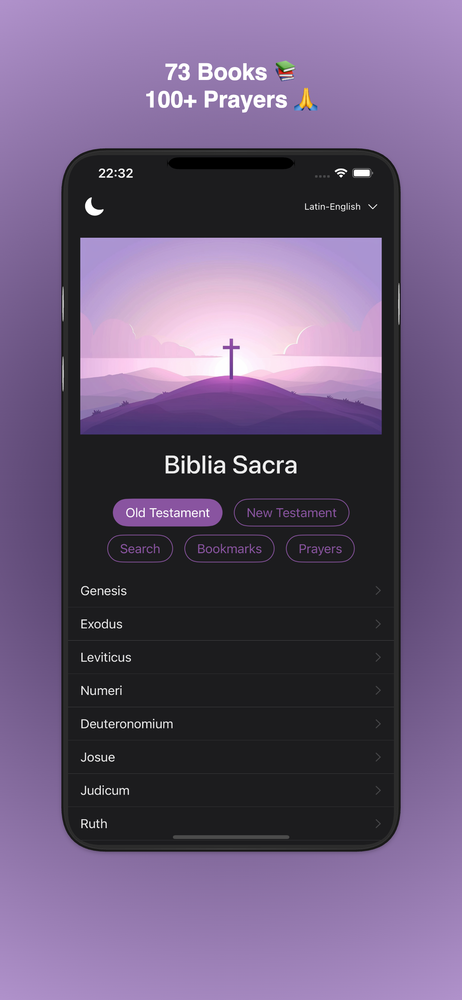
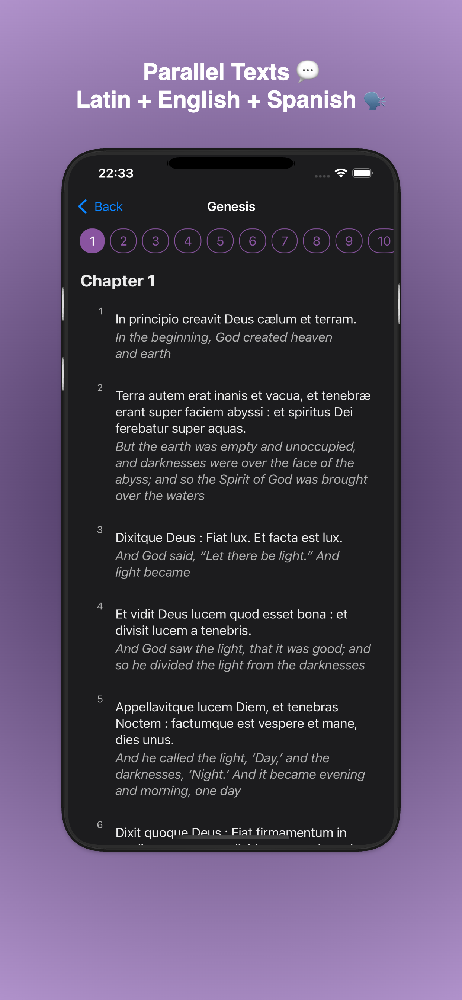
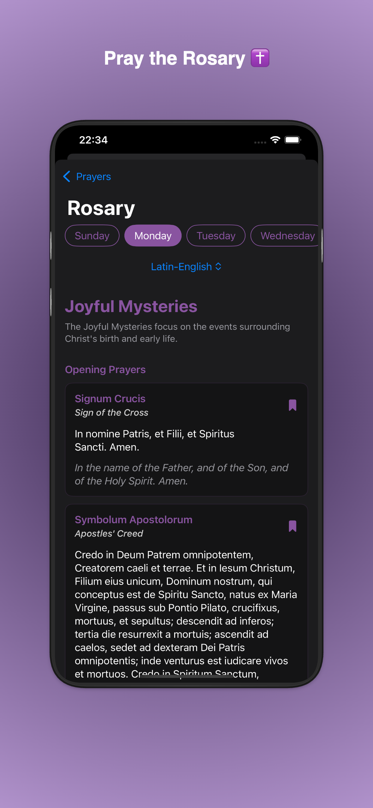

Experience Sacred Scripture in Latin & English
The most comprehensive bilingual Bible app for Catholic scholars and faithful alike
73
Books
3
Languages

Beautifully Designed for iOS & Android
Explore 73 Books

Parallel Texts

Traditional Prayers
Download Now
Experience sacred scripture in Latin, English, and Spanish